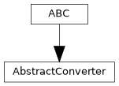

pyTRLCConverter.abstract_converter
Abstract converter interface which all implementations must fullfill.
Author: Norbert Schulz (norbert.schulz@newtec.de)
Classes
Abstract converter interface. |
Module Contents
- class pyTRLCConverter.abstract_converter.AbstractConverter[source]
Bases:
abc.ABC
Abstract converter interface.
- abstractmethod begin() pyTRLCConverter.ret.Ret[source]
Begin the conversion process.
- Returns:
Status
- Return type:
- abstractmethod convert_record_object(record: pyTRLCConverter.trlc_helper.Record_Object, level: int) pyTRLCConverter.ret.Ret[source]
Process the given record object
- Parameters:
record (Record_Object) – The record object
level (int) – The record indentation level
- Returns:
Status
- Return type:
- abstractmethod convert_section(section: str, level: int) pyTRLCConverter.ret.Ret[source]
Process the given section item.
- Parameters:
section (str) – The section name
level (int) – The section indentation level
- Returns:
Status
- Return type:
- abstractmethod enter_file(file_name: str) pyTRLCConverter.ret.Ret[source]
Enter a file.
- Parameters:
file_name (str) – File name
- Returns:
Status
- Return type:
- abstractmethod finish() pyTRLCConverter.ret.Ret[source]
Finish the conversion process.
- Returns:
Status
- Return type:
- static get_description() str[source]
- Abstractmethod:
Return converter description.
- Returns:
Converter description
- Return type:
str
- static get_subcommand() str[source]
- Abstractmethod:
Return subcommand token for this converter.
- Returns:
subcomand argument token
- Return type:
str
- abstractmethod leave_file(file_name: str) pyTRLCConverter.ret.Ret[source]
Leave a file.
- Parameters:
file_name (str) – File name
- Returns:
Status
- Return type: